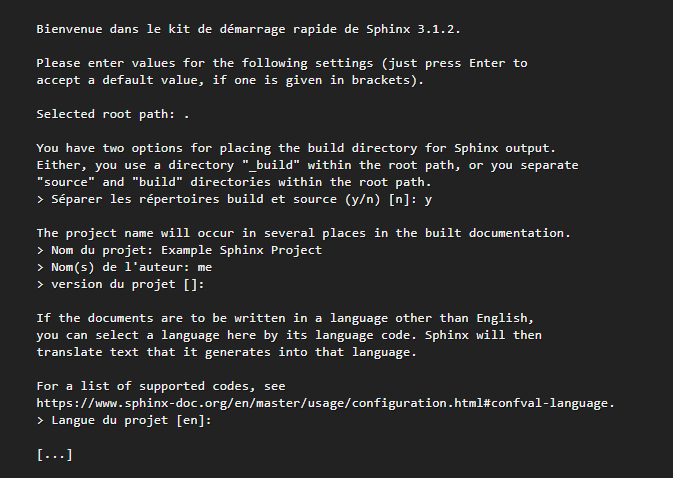
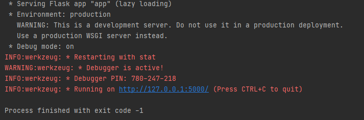

Guide D’installation¶
1- Configurer l’environnement virtuel¶
Dans le terminal, exécuter les commandes ci-dessous :
python3 -m venv Linkedin_rec
source Linkedin_rec/bin/activate
Installation des bibliothèques nécessaires :
pip install -r requirements.txt
2- Configurer Sphinx¶
ouvrir cmd et changer le chemin jusqu’à le dossier document
éxecuter la commande :sphinx-quickstart (« yes » pour la premiere question)
Le message suivant va être imprimé sur le terminal :

retrouvez avec un dossier source/ qui contiendra votre documentation, et deux fichiers : Makefile pour générer la doc depuis Linux, MacOS,… et make.bat pour générer la doc depuis Windows.
Generate Documentation:
- HTML
$ make clean
$ make html
$ sphinx-apidoc -o source/rst/ ../app
Une fois la doc générée, vous retrouverez le résultat dans le dossier build/html/.
$ sphinx-build -b rinoh source _build/rinoh
Une fois la doc générée, vous retrouverez le résultat dans le dossier _build/rinoh/….
Vous pouvez à présent ouvrir index.html dans votre navigateur et voir le résultat.
3- Pour exécuter l’application¶
Exécuter la commande ci-dessous lorsque l’environnement virtuel est actif :
python run.py
Le message suivant doit être imprimé sur le terminal :

Cela indique un comportement normal. Nous devrions trouver la page d’accueil ici : http://127.0.0.1:5000/